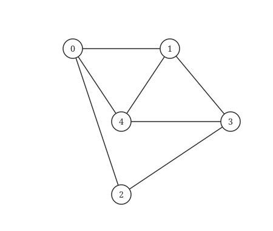
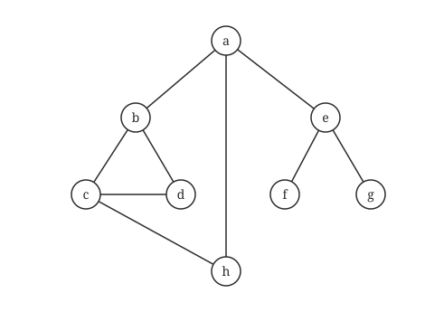
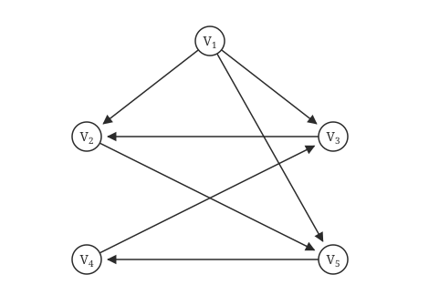

408
408图这一卷有两条线：先存下来（矩阵还是链表），再走一遍（BFS 还是 DFS）。所有图算法都是它们的变形。
其之壹基本术语
只记会考的：
- 顶点数与边数：无向图度数之和 = 2e；有向图入度和 = 出度和 = e。
- 完全图：无向 n(n−1)/2 条边，有向 n(n−1) 条。
- 连通（无向图）：任意两点可达。强连通（有向图）：任意两点双向可达。
- 生成树：连通图的极小连通子图，n 个顶点 n−1 条边。多一条成环，少一条不连通。
- 简单路径：顶点不重复。回路（环）：起点等于终点。
边数的临界值
n 个顶点连通，最少 n−1 条边。
有向图强连通，最少 n 条边（一个环）。
保证任何情况都连通，最少 C(n−1, 2) + 1 条边：先让 n−1 个点互相连满，再连上最后一个点。
n 个顶点、边数 > n−1，一定有环（无向图）。
其之貳四种存储
| 0 | 1 | 2 | 3 | |
|---|---|---|---|---|
| 0 | 0 | 1 | 1 | 0 |
| 1 | 1 | 0 | 1 | 0 |
| 2 | 1 | 1 | 0 | 1 |
| 3 | 0 | 0 | 1 | 0 |
邻接矩阵：A[i][j]=1 表示有边。空间 O(n²)，适合稠密图。无向图对称，第 i 行之和是度。有向图第 i 行之和是出度，第 i 列之和是入度。
邻接矩阵的 n 次方（2015 大题）
Aᵐ[i][j] = 从 i 到 j 长度为 m 的路径条数。
邻接表：每个顶点挂一条链表，放它的邻居。无向图边结点 2e 个，有向图 e 个。空间 O(n+e)，适合稀疏图。
邻接表的两个小结论
有向图的邻接表找出度容易，找入度要扫整张表（所以有逆邻接表和十字链表）。同一张图的邻接表表示不唯一（链表内顺序可以换），由此 BFS、DFS 序列也不唯一。邻接矩阵是唯一的。
十字链表（有向图）：弧结点同时挂在「尾相同」和「头相同」两条链上，入度出度都好求。 邻接多重表（无向图）：每条边只用一个结点表示，同时挂在两个顶点的链上，删边方便。
四种存储对比
| 存储 | 适用 | 空间 | 判断 i-j 有边 | 求度 |
|---|---|---|---|---|
| 邻接矩阵 | 稠密、有向无向 | O(n²) | O(1) | O(n) |
| 邻接表 | 稀疏、有向无向 | O(n+e)（有向） | O(度) | 出度 O(度)、入度 O(e) |
| 十字链表 | 有向 | O(n+e) | O(度) | 好求 |
| 多重表 | 无向 | O(n+e) | O(度) | 好求 |
其之參两种遍历
BFS 像水波，一圈圈扩散，用队列。DFS 像走迷宫，一路走到黑再回头，用栈（递归）。两者都要用 visited[] 防止走回头路。
遍历的复杂度（只看存储方式）
邻接矩阵：O(n²)。邻接表：O(n+e)。BFS 和 DFS 都一样。
空间都是 O(n)（队列或递归栈）。
void DFS(ALGraph *G, int v) { visited[v] = 1; visit(v); for (ArcNode *p = G->adj[v].first; p; p = p->next) if (!visited[p->adjvex]) DFS(G, p->adjvex); } void BFS(ALGraph *G, int s) { int Q[MaxV], f = 0, r = 0; visited[s] = 1; visit(s); Q[r++] = s; while (f < r) { int v = Q[f++]; for (ArcNode *p = G->adj[v].first; p; p = p->next) if (!visited[p->adjvex]) { visited[p->adjvex] = 1; // 入队时就要标记，否则重复入队 visit(p->adjvex); Q[r++] = p->adjvex; } } }
遍历能回答的问题
连通分量数 = 主循环里调用 BFS/DFS 的次数。
BFS 求无权图单源最短路径（边数最少）。
判断有向图有环：DFS 时遇到「还在递归栈里」的顶点；或拓扑排序失败。
DFS 退出顺序的逆序 = 拓扑序。
判断 BFS 序列
看「层」：第一层的邻居必须全部出现，才能出现第二层。用队列模拟一遍，后面的顶点必须按「它的父亲的出队先后」排列。
领域展开
存储：矩阵 O(n²)、邻接表 O(n+e)。
遍历：BFS 队列、DFS 栈；复杂度只看存储。
边数：连通最少 n−1；保证连通最少 C(n−1,2)+1。
其之肆实战
再深一层
· n = 7 → (6×5)/2 + 1 = 15 + 1 = 16。
⚠️ 本题的题眼是"在任何情况下"四个字：
· 若问"最少多少条边可能连通" → 答 6（= n−1，生成树，选项 A 就是这个陷阱）；
· 问"保证连通" → 必须扛住最坏布局（6 点完全图 + 1 孤立点）→ 16。
· 选 21 的是把 7 个顶点的完全图边数算了出来（7×6/2），过头了。
Ⅰ. 所有顶点的度之和为偶数 Ⅱ. 边数大于顶点个数减 1 Ⅲ. 至少有一个顶点的度为 1
再深一层
· Ⅰ 对：度和 = 2|E| ⟹ 恒为偶数（任何无向图都成立，不限连通）。
· Ⅱ 错：应该是"边数 ≥ n−1"。反例：任何一棵树（生成树）恰好 e = n−1，"大于"不成立。
· Ⅲ 错：反例——n 个顶点连成一个环，每个顶点的度都是 2，没有度为 1 的顶点。（度为 1 的顶点在树里叫叶，环里根本没有）
⚠️ 这题三条全是"看似都对"，关键是记住 ≥ 与 > 的差别，以及"环"这个万能反例。
再深一层
· 度和 = 2×16 = 32；
· 已知贡献 = 3×4 + 4×3 = 12+12 = 24；
· 剩 32−24 = 8，其他顶点度"均小于 3"⟹ 最大取 2 → 8÷2 = 4 个；
· 至少 3+4+4 = 11。
⚠️ 若粗心按度 1 算会得 8 个顶点、总数 15（选项 D 就是这个陷阱）——那求的是"至多"不是"至少"。求最少顶点数就把剩余度数取满。
1）写出图 G 的邻接矩阵 A（行、列下标从 0 开始）。
2）求 A2，矩阵 A2 中位于 0 行 3 列元素值的含义是什么？
3）若已知具有 n(n≥2) 个顶点的图的邻接矩阵为 B，则 Bm(2≤m≤n) 中非零元素的含义是什么？

0 1 1 0 1 1 0 0 1 1 1 0 0 1 0 0 1 1 0 1 1 1 0 1 02）A2 为：
3 1 0 3 1 1 3 2 1 2 0 2 2 0 2 3 1 0 3 1 1 2 2 1 3矩阵 A2 中位于 0 行 3 列的元素值为 3，表示从顶点 0 到顶点 3 之间长度为 2 的路径共有 3 条。
3）Bm 中位于 i 行 j 列（0≤i,j≤n−1）的非零元素的含义是：图中从顶点 i 到顶点 j 长度为 m 的路径的条数。
再深一层
1）邻接矩阵 A（边集 (0,1)、(0,2)、(0,4)、(1,3)、(1,4)、(2,3)、(3,4)）：
0 1 2 3 4 0 [ 0 1 1 0 1 ] 1 [ 1 0 0 1 1 ] 2 [ 1 0 0 1 0 ] 3 [ 0 1 1 0 1 ] 4 [ 1 1 0 1 0 ]填完先自查：① 无向图矩阵必对称 ✓；② 主对角线全 0（无自环）✓；③ 行和 = 各点的度 = 3,3,2,3,3，和 = 14 = 2×7 = 2|E| ✓。三条都过再往下算，能挡掉绝大多数抄图错误。
2）A²：
0 1 2 3 4 0 [ 3 1 0 3 1 ] 1 [ 1 3 2 1 2 ] 2 [ 0 2 2 0 2 ] 3 [ 3 1 0 3 1 ] 4 [ 1 2 2 1 3 ]手算捷径：不必逐格做内积。A² 的第 i 行 = 把 A 中"i 的邻居"那几行加起来。例如第 0 行：0 的邻居是 1、2、4 ⟹ 第 0 行 = 行1 + 行2 + 行4 = (1,0,0,1,1)+(1,0,0,1,0)+(1,1,0,1,0) = (3,1,0,3,1)。五行都这么加，比做 25 次内积快得多也不易错。
0 行 3 列 = 3 的含义：从顶点 0 到顶点 3、长度恰为 2 的路径共有 3 条，即 0—1—3、0—2—3、0—4—3（0 的三个邻居 1、2、4 恰好都与 3 相邻，可以直接在图上点出来验证）。
再多看两格加深理解：主对角线上的 A²[i][i] 恰等于顶点 i 的度（从 i 出去再原路回来，走一条边就有一条这样的"路径"）——0,1,3,4 的度是 3，2 的度是 2，与对角线 3,3,2,3,3 完全吻合，这是验算 A² 的最快自查点。
3）一般结论：Bm[i][j] = 图中从顶点 i 到顶点 j 长度恰好为 m 的路径条数（非零就表示这样的路径存在）。
⚠️ 三个必须写准的字眼：① "长度恰为 m"，不是"不超过 m"（那要算 B+B²+…+Bm）；② 这里的"路径"允许重复经过顶点和边（0—1—0 也算长度 2 的路径，所以对角线才非零）——若题目问的是不重复顶点的简单路径，这个结论就不成立；③ 幂次是长度、元素值是条数，别说反（本节选择题 08 考的就是这一句）。

再深一层
判 BFS 序列的唯一诀窍：起点的全部邻接点必须成段连续出现，第二层不许插队。
· D. a,b,c,… ✗：a 的邻接点是 b、e、h 三个，BFS 必须先把这三个全访问完才能进入第二层；序列第 3 位却是 c（c 是第二层，要经 b 才能到）⟹ 不合法。
· A. h,c,a,b,d,e,g,f ✓：起点 h，第一层 {c,a} 连续出现 ✓；出队 c 得 {b,d}，出队 a 得 {e} ⟹ b,d,e ✓；出队 e 得 {g,f}（同层内顺序任意）✓。
· B. e,a,f,g,b,h,c,d ✓：起点 e，第一层 {a,f,g} 连续 ✓；出队 a 得 {b,h} ✓；出队 b 得 {c,d} ✓。
· C. d,b,c,a,h,e,f,g ✓：起点 d，第一层 {b,c} 连续 ✓；出队 b 得 {a}，出队 c 得 {h} ⟹ a,h ✓；出队 a 得 {e} ✓；出队 e 得 {f,g} ✓。
📌 考场手法（30 秒内解决）：不要真去模拟队列。只看每个选项的第 1 个顶点，数出它有几个邻居 k，然后检查序列的第 2…k+1 位是不是恰好就是这 k 个邻居（顺序任意）。D 项 a 有 3 个邻居，第 2–4 位应是 {b,e,h} 的某个排列，实际是 b,c,d ⟹ 当场毙掉。这一招能秒杀绝大多数"判 BFS 序列"的真题。
⚠️ 同层顶点内部顺序任意（因为题目只给图、没给邻接表），所以 A 中的"g 在 f 前"完全合法，别拿字母序去卡。
再深一层
按 v0 第一步走谁，分三支穷举（注意这是有向图，v₂、v₃ 出度为 0，进去就得回溯）：
· 第一步 v1：v₁→v₃（v₁ 唯一的出弧）⟹ 回溯到 v₀ ⟹ 只剩 v₂ ⟹ v₀v₁v₃v₂ （1 种）
· 第一步 v2：v₂ 无出弧，回溯到 v₀，剩 v₁、v₃ 两个可选：
– 走 v₁ ⟹ v₁→v₃ ⟹ v₀v₂v₁v₃； – 走 v₃ ⟹ 回溯 ⟹ v₁ ⟹ v₀v₂v₃v₁ （2 种）
· 第一步 v3：v₃ 无出弧，回溯，剩 v₁、v₂：
– 走 v₁（v₁ 的出弧 v₃ 已访问，回溯）⟹ v₂ ⟹ v₀v₃v₁v₂； – 走 v₂ ⟹ 回溯 ⟹ v₁ ⟹ v₀v₃v₂v₁ （2 种）
⟹ 1+2+2 = 5。
📌 本题的题眼在 ⟨v1,v3⟩ 这条弧：它唯一地压掉了一种可能——第一步走 v₁ 时被迫立刻去 v₃，导致这一支只有 1 种而不是 2 种。若没有这条弧，答案就是 3!=6。命题人加它就是为了让"6"这个想当然的答案落空（所以选项里连 6 都不给，逼你老实枚举）。
⚠️ 枚举时按"第一步选谁"分类，比乱试有序得多，4 个顶点最多 3 支、每支至多 2 条，30 秒能穷尽。顶点再多就该改用"画搜索树"的画法。

再深一层
· A. V₁,V₅,V₄,V₃,V₂ ✓：V₁→V₅→V₄→V₃→V₂，一条道走到底，连回溯都不用。
· B. V₁,V₃,V₂,V₅,V₄ ✓：V₁→V₃→V₂→V₅→V₄，同样一路到底。
· C. V₁,V₂,V₅,V₄,V₃ ✓：V₁→V₂→V₅→V₄→V₃，同样一路到底。
· D. V₁,V₂,V₃,… ✗：V₂ 只有一条出弧 V₂→V₅，且 V₅ 未访问 ⟹ DFS 必须去 V₅，不能回溯；而 V₂ 与 V₃ 之间只有 V₃→V₂（方向相反），从 V₂ 根本走不到 V₃ ⟹ 不合法。
📌 有向图 DFS 的两条铁律（本题两条都用上了）：
① 只能顺着箭头走——V₃→V₂ 存在不代表能从 V₂ 到 V₃，这是与无向图最大的区别，也是本题唯一的考点；
② 当前顶点还有未访问的出邻接点时，不许回溯——先深入，走不动了才退。
⚠️ 本图恰好有"从 V₁ 出发的哈密顿式一条龙"（A、B、C 三条都不用回溯），做题时先试"能不能一路顺箭头走通"，通了就是合法序列，比逐点验回溯快得多。
⚠️ 读图时务必逐条确认箭头方向：本图中间两条交叉弧是 V₂→V₅ 与 V₄→V₃（一去一回、方向相反），看反任何一条，四个选项的判定就会全乱。
再深一层
拆成两笔账：
· 外层
for(i=0;i<n;i++) 把 n 个顶点表结点各碰一次 ⟹ O(n)；· 每个顶点出队时顺着自己的边表走一遍，全图的边表结点总共被走一次 ⟹ 有向图 e 个结点 ⟹ O(e)（无向图是 2e 个，仍是 O(e)）。
⟹ 合计 O(n+e)。
⚠️ "n 这一项不能省"：即使 e=0（全是孤立顶点），外层循环仍要跑 n 次，所以答案不是 O(e)。反过来 e 也不能省：稠密图里 e 可以到 n²。
📌 2012 年这道题的姊妹结论要一起背：同样是 BFS，换成邻接矩阵存储就是 O(n²)（第 6 题）。408 真题在这个点上只换存储结构，不换问法——看到"邻接表"直接 O(n+e)，看到"邻接矩阵"直接 O(n²)，秒选。